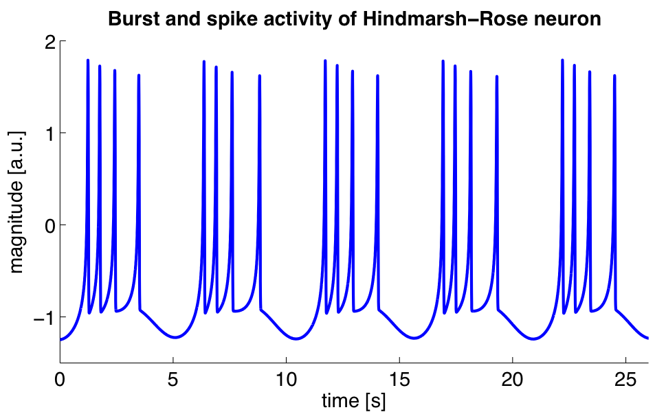

Neurons for Computer Geeks - Part VI: LIF At Long Last!
Wednesday, September 16, 2015
Welcome to part VI of a multi-part series on modeling neurons. In part V we added a tad more theory to link electricity with neurons, and also tried to give an idea of just how complex neurons are. Looking back on that post, I cannot help but notice I skipped one bit that is rather important to understanding Integrate-and-Fire (IAF) models. So lets look at that first and then return to our trail.
Resting Potential and Action Potential
We have spoken before about the membrane potential and the resting membrane potential, but we did so with such a high degree of hand-waving it now warrants revisiting. When we are talking about the resting membrane potential we mean just that - the value for the membrane potential when nothing much is happening. That is the magical circa -65mv we discussed before - with all of the related explanations on conventions around negative voltages. However, time does not stand still and things happen. The cell receives input from other neurons, and this varies over time. Some kinds of inputs can cause events to trigger on the receiving neuron: active ion channels may get opened or shut, ions move around, concentrations change and so forth, and thus, the cell will change its membrane potential in response. When these changes result in a higher voltage - such as moving to -60mv - we say a depolarisation is taking place. Conversely, when the voltage becomes more negative, we say hyperpolarisation is occurring.
Now, it may just happen that there is a short-lived but "strong" burst of depolarisation, followed by equally rapid hyperpolarisation - and, as a result of which, the Axon's terminal decides to release neurotransmitters into the synapse (well, into the synaptic gap or synaptic cleft to be precise). This is called an action potential, and it is also known by many other names such as "nerve impulses" or "spikes". When you hear that "a neuron has fired" this means that an action potential has just been emitted. If you record the neuron's behaviour over time you will see a spike train - a plot of the voltage over time, clearly showing the spikes. Taking a fairly random example:

Figure 1: Source: Wikipedia, Neural oscillation
One way of picturing this is as a kind of "chain-reaction" whereby something triggers the voltage of the neuron to rise, which triggers a number of gates to open, which then trigger the voltage to rise and so on, until some kind of magic voltage threshold is reached where the inverse occurs: the gates that were causing the voltage to rise shut and some other gates that cause the voltage to decrease open, and so on, until we fall back down to the resting membrane potential. The process feeds back on itself, first as a positive feedback and then as a negative feedback. In the case of the picture above, something else triggers us again and again, until we finally come to rest.
This spiking or firing behaviour is what we are trying to model.
Historical Background
As it happens, we are not the first ones to try to do so. A couple of years after Einstein's annus mirabilis, a french chap called Louis Lapicque was also going through his own personal moment of inspiration, the output of which was the seminal Recherches quantitatives sur l'excitation électrique des nerfs traitée comme une polarisation. It is summarised here in fairly accessible English by Abbot.
Lapicque had the insight of imagining the neuron as an RC circuit, with the membrane potential's behaviour explained as the interplay between capacitor and resistor; the action potential is then the capacitor reaching a threshold followed by a discharge. Even with our faint understanding of the subject matter, one cannot but appreciate Lapique's brilliance to have the ability to reach these conclusions in 1907. Of course, he also had to rely on the work of many others to get there, let's not forget.
This model is still considered a useful model today, even though we know so much more about neurons now - a great example of what we mentioned before in terms of the choices of the level of detail when modeling. Each model is designed for a specific purpose and it should be as simple as possible for the stated end (but no simpler). As Abbot says:
While Lapicque, because of the limited knowledge of his time, had no choice but to model the action potential in a simple manner, the stereotypical character of action potentials allows us, even today, to use the same approximation to avoid computation of the voltage trajectory during an action potential. This allows us to focus both intellectual and computation resources on the issues likely to be most relevant in neural computation, without expending time and energy on modeling a phenomenon, the generation of action potentials, that is already well understood.
The IAF Family
Integrate-and-Fire is actually a family of models - related because all of them follow Lapicque's original insights. Over time, people have addressed shortcomings in the model by adding more parameters and modifying it slightly and from this other models were born.
In general, models in the IAF family are single neuron models with a number of important properties (as per Izhikevich):
- The spikes are all or none; that is, we either spike or we don't. This is a byproduct of the way spikes are added to the model, as we shall see later. This also means all spikes are identical because the are all created the same way.
- The threshold for the spike is well defined and there is no ambiguity as to whether the neuron will fire or not.
- It is possible to add a refractory period, similarly to how we add the spike. The refractory period is a time during which the neuron is less excitable (e.g. ignores inputs) and occurs right after the spike.
- Positive currents are used as excitatory inputs and negative currents as inhibitory inputs.
But how do the members of this family look like? We will take a few examples from Wikipedia to make a family portrait and then focus on LIF.
IAF: Integrate-and-Fire
This the Lapicque model. It is also called a "perfect" or "non-leaky" neuron. The formula is as follows:
\[ I(t) = Cm\frac{dV_m(t)}{dt} \]
The m's are there to signify membrane, nothing else. Note that its
the job of the user to determine θ - that is the point at which the
neuron spikes - and then to reset everything to zero and start
again. If you are wondering why it's called "integrate", that's
because the differential equation must be integrated before we can
compare the current value to a threshold and then, if we're passed it,
well - fire!. Hence Integrate-and-Fire.
Wikipedia states this in a classier way, of course:
[This formula] is just the time derivative of the law of capacitance, Q = CV. When an input current is applied, the membrane voltage increases with time until it reaches a constant threshold Vth, at which point a delta function spike occurs and the voltage is reset to its resting potential, after which the model continues to run. The firing frequency of the model thus increases linearly without bound as input current increases.
Integrate-and-Fire with Refractory Period
It is possible to extend IAF to take the refractory period into account. This is done by adding a period of time t ref during which the neuron does not fire.
LIF: Leaky Integrate-and-Fire
One of the problems of IAF is that it will "remember" stimulus, regardless of the time that elapses between stimuli. By way of example: if a neuron gets some input below the firing threshold at some time (say ta), then nothing for a long period of time and then subsequent stimulus at say tb, this will cause the neuron to fire (assuming the two inputs together are above the threshold). In the real world, neurons "forget" about below-threshold stimulus after certain amount of time has elapsed. This problem is solved in LIF by adding a leak term to IAF. The Wikipedia's formula is like so:
\[ I_m(t) − \frac{V_m(t)}{R_m} = C_m\frac{dV_m(t)}{dt} \]
We will discuss it in detail later on.
Interlude: Leaky Integrators and Low-Pass Filters
Update: this section got moved here from an earlier post.
Minor detour into the world of "Leaky Integrators". As it turns out, mathematicians even have a name to describe functions like the one above: they are called Leaky Integrators. A leaky integrator is something that takes an input and "integrates" - that is, sums it over a range - but by doing so, starts "leaking" values out. In order words, a regular sum of values over a range should just result in an ever growing output. With a leaky integrator, we add up to a point, but then we start leaking, resetting the value of the sum back to where we started off.
It turns out these kind of functions have great utility. For example, imagine that you have a range of inputs varying from some arbitrary low number to some other arbitrary high-number. When you supply these inputs to a leaky integrator, it can be used to "filter out" the high numbers; input numbers higher than a certain cut-off point just result in zeros in the output. This is known as a low-pass filter. One can conceive of a function that acted in the opposite way - a high-pass filter.
Exponential Integrate-and-Fire
In this model, spike generation is exponential:
\[ \frac{dX}{dt} = Δ_τ e^{\frac{X − X_t}{Δ_τ}} \]
Wikipedia explains it as follows:
where X is the membrane potential, XT is the membrane potential threshold, and ΔT is the sharpness of action potential initiation, usually around 1 mV for cortical pyramidal neurons. Once the membrane potential crosses XT, it diverges to infinity in finite time.
Others
We could continue and look into other IAF models, but you get the point. Each model has limitations, and as people work through those limitations - e.g. try to make the spike trains generated by the model closer to those observed in reality - they make changes to the model and create new members of the IAF family.
Explaining the LIF Formula
Let's look at a slightly more familiar formulation of LIF:
\[ τ_m\frac{dv}{dt} = −v(t) + RI(t) \]
By now this should make vague sense, but lets do it step by step breakdown just to make sure we are all on the same page. First, we know that the current of the RC circuit is defined like so:
\[ I(t) = I_R + I_C \]
From Ohm's Law we also know that:
\[ I_R = \frac{v}{R} \]
And from the rigmarole of the capacitor we also know that:
\[ I_C = C\frac{dv}{dt} \]
Thus its not much of a leap to say:
\[ I(t) = \frac{v(t)}{R} + C\frac{dv}{dt} \]
Now, if we now multiply both sides by R, we get:
\[ RI(t) = v(t) + RC\frac{dv}{dt} \]
Remember that RC is τ, the RC time constant; in this case, we are dealing with the membrane so hence the m. With that, the rest of the rearranging to the original formula should be fairly obvious.
Also, if you recall, we mentioned Leaky Integrators before. You should hopefully be able to see the resemblance between these and our first formula.
Note that we did not model spikes explicitly with this formula. However, when it comes to implementing it, all that is required is to look for a threshold value for the membrane potential - called the spiking threshold; when that value is reached, we need to reset the membrane potential back to a lower value - the reset potential.
And with that we have enough to start thinking about code…
Method in our Madness
… Or so you may think. First, a quick detour on discretisation. As it happens, computers are rather fond of discrete things rather than the continuous entities that inhabit the world of calculus. Computers are very much of the same opinion as the priest who said:
And what are these same evanescent Increments? They are neither finite Quantities nor Quantities infinitely small, nor yet nothing. May we not call them the Ghosts of departed Quantities?
So we cannot directly represent differential equations in the computer - not even the simpler ordinary differential equations (ODEs), with their single independent variable. Instead, we need to approximate them with a method for numerical integration of the ODE. Remember: when we say integration we just mean "summing".
Once we enter the world of methods and numerical analysis we are much closer to our ancestral home of Software Engineering. The job of numerical analysis is to look for ways in which one can make discrete approximations of the problems in mathematical analysis - like, say, calculus. The little recipes they come up with are called numerical methods. A method is nothing more than an algorithm, a set of steps used iteratively. One such method is the Euler Method: "[a] numerical procedure for solving ordinary differential equations (ODEs) with a given initial value", as Wikipedia tells us, and as it happens that is exactly what we are trying to do.
So how does the Euler method work? Very simply. First you know that:
\[ y(t_0) = y0 \]
\[ y′(t) = f(t, y(t)) \]
That is, at the beginning of time we have a known value. Then, for all other t's, we use the current value in f in order to be able to compute the next value. Lets imagine that our steps - how much we are moving forwards by - are of a size \(h\). You can then say:
\[ t_{n + 1} = t_n + h \]
\[ y_{n+1} = y_n + h \times f(x_n,t_n) \]
And that's it. You just need to know where you are right now, by how much you need to scale the function - e.g. the step size - and then apply the function to the current values of x and t.
In code:
template<typename F>
void euler(F f, double y0, double start, double end, double h) {
double y = y0;
for (auto t(start); t < end; t += h) {
y += h * f(t, y, h);
}
}
We are passing h to the function F because it needs to know about
the step size, but other than that it should be a pretty clean mapping
from the maths above.
This method is also known as Forward Euler or Explicit Euler.
What next?
And yet again, we run out of time yet again before we can get into serious coding. In the next instalment we shall cover the implementation of the LIF model.
Update: we never did finish this series of posts. We may resume them in the future.
| Back to previous chapter | Back to chapter index. |